회로 1/2 · C2 · 실험 1-2) 전가산기 (74HC86 + 74HC08 + 74HC32) · 기록: T3 · 판독: LED

강의노트 p5 · 회로 구성
교안 p5 회로도 그대로. 이 주차 첫 회로라 맨바닥에서 시작한다 — 교안이 앞에 두는 반가산기(실험 1-1)는 조교 공지 _350547_1 로 하지 않는다. 관측 단계는 다섯이다 — 관측 노드 하나가 단계 하나이고 한 단계에서 새로 꽂는 신호선은 셋 이하다. A⊕B → S → A·B → (A⊕B)·Ci → Co 순으로 신호가 흐르는 차례다. LED 는 둘뿐이라 중간 노드는 그 시점에 비어 있는 LED 의 급전선을 그 핀으로 잠시 옮겨 본다 (LED1 은 1단계, LED2 는 3·4단계). 임시 급전선을 뽑는 자리마다 걷기 행과 걷기 그림이 한 장씩 있어 단계 표는 여덟 줄이다 — 뽑는 일을 글로만 지시하지 않는다.
완성본 — 손그림 원도 (회색 없음)

결선도: 실험03_1-2_결선도_전가산기.png
- 1전원잭 → 좌 VCC레일3행전원장치 +5V 잭
- 2전원잭 → 좌 GND레일4행전원장치 0V 잭
- 3좌 GND레일29행 → 우 중앙GND레일29행레일 브리지
- 4좌 VCC레일30행 → 좌 중앙VCC레일30행레일 브리지
- 5좌 중앙VCC레일34행 → 우 VCC레일34행레일 브리지
- 6좌 g7 → 좌 중앙VCC레일7행pin 14 -> +5V 레일
- 7좌 b13 → 좌 GND레일13행pin 7 -> GND 레일
- 8우 g10 → 우 VCC레일10행pin 14 -> +5V 레일
- 9우 a16 → 우 중앙GND레일16행pin 7 -> GND 레일
- 10좌 GND레일7행 → 좌 b7입력 A -> 74HC86 pin 1 · 1 이면 레일 쪽 끝을 +5V 레일로 옮겨요
- 11좌 GND레일9행 → 좌 b8입력 B -> 74HC86 pin 2 · 1 이면 레일 쪽 끝을 +5V 레일로 옮겨요
- 12좌 GND레일11행 → 좌 b11입력 Ci -> 74HC86 pin 5 (XOR2) · 1 이면 레일 쪽 끝을 +5V 레일로 옮겨요
- 13좌 c9 → 좌 c10XOR1 출력 A⊕B -> XOR2 입력 (pin 3 -> pin 4)
- 14좌 b12 → 좌 a25S = 74HC86 pin 6 -> LED1
- 15좌 b25 → 좌 c28S: LED(좌 b25→좌 b26) + 330Ω(좌 c26→좌 c28) 직렬 · S = A⊕B⊕Ci — 진리표 T3 의 S 열
- 16좌 a28 → 좌 GND레일28행S 저항 아래 -> GND
- 17좌 d7 → 우 a10입력 A 갈래 -> 74HC08 pin 1
- 18좌 c8 → 우 b11입력 B 갈래 -> 74HC08 pin 2
- 19좌 a9 → 우 c13A⊕B (74HC86 pin 3) -> 74HC08 pin 4 (AND2)
- 20좌 c11 → 우 a14입력 Ci 갈래 -> 74HC08 pin 5 (AND2)
- 21우 d12 → 우 d22AND1 출력 (74HC08 pin 3) -> 74HC32 pin 2
- 22우 b15 → 우 b21AND2 출력 (74HC08 pin 6) -> 74HC32 pin 1
- 23우 c23 → 우 c29Co = 74HC32 pin 3 -> LED2
- 24우 d29 → 우 e32Co: LED(우 d29→우 d30) + 330Ω(우 e30→우 e32) 직렬 · Co = A·B + (A⊕B)·Ci — 진리표 T3 의 Co 열
- 25우 c32 → 우 중앙GND레일31행Co 저항 아래 -> GND
- 26우 g21 → 우 VCC레일21행pin 14 -> +5V 레일
- 27우 d27 → 우 중앙GND레일27행pin 7 -> GND 레일
손그림은 이 그림을 따라 그리고, 학번·이름·날짜는 손으로 적어요
U1 = 74HC86 (quad 2-input XOR, DIP-14) — S1
- pin 14 → VCC(+5V)
- pin 7 → GND
- pin 1 ← 입력 A (XOR1)
- pin 2 ← 입력 B
- pin 3 → U1.pin4 (XOR1 출력 A⊕B → XOR2 입력)
- pin 3 → U2.pin4 (A⊕B → AND2 입력, 팬아웃)
- pin 4 ← U1.pin3 (XOR2)
- pin 5 ← 입력 Ci
- pin 6 → LED1 애노드 (330Ω 직렬) → GND ※ S = A⊕B⊕Ci, T3 의 S 열
U2 = 74HC08 (quad 2-input AND, DIP-14) — S3
- pin 14 → VCC(+5V)
- pin 7 → GND
- pin 1 ← 입력 A (AND1)
- pin 2 ← 입력 B
- pin 3 → U3.pin2 (AND1 출력 A·B → OR)
- pin 4 ← U1.pin3 (AND2, A⊕B)
- pin 5 ← 입력 Ci
- pin 6 → U3.pin1 (AND2 출력 (A⊕B)·Ci → OR)
U3 = 74HC32 (quad 2-input OR, DIP-14) — S4
- pin 14 → VCC(+5V)
- pin 7 → GND
- pin 1 ← U2.pin6 ((A⊕B)·Ci)
- pin 2 ← U2.pin3 (A·B)
- pin 3 → LED2 애노드 (330Ω 직렬) → GND ※ Co = A·B + (A⊕B)·Ci, T3 의 Co 열
- 미사용 입력핀: pin 9, 10, 12, 13 → 개방 (접지 생략 — 공통 규칙)
- 미사용 출력핀: pin 8, 11 → 개방
- 미사용 입력핀: pin 9, 10, 12, 13 → 개방 (접지 생략 — 공통 규칙)
- 미사용 출력핀: pin 8, 11 → 개방
- 미사용 입력핀: pin 4, 5, 9, 10, 12, 13 → 개방 (접지 생략 — 공통 규칙)
- 미사용 출력핀: pin 6, 8, 11 → 개방
Ci 입력 점퍼는 U1 pin 5 와 U2 pin 5 두 곳으로 팬아웃한다. OR 의 두 입력은 교안 회로도에서 위가 AND2, 아래가 AND1 이지만 OR 은 교환 법칙이 성립하므로 pin 1·2 의 배정은 배선 편의다 — 교안 원문이 아니다.
단계 1
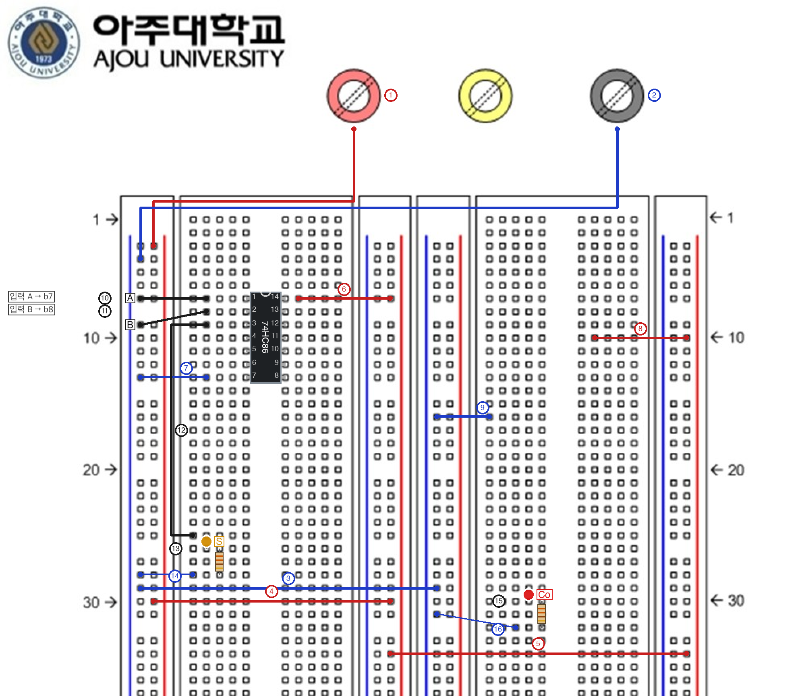
이 단계에서: 74HC86 을 S1 에 꽂는다. 전원(14→VCC, 7→GND)·레일 브리지 셋·LED1 사슬·LED2 사슬(330Ω→GND)과 S3 전원 두 가닥을 미리 꽂는다. 신호선: A→pin 1, B→pin 2, 임시로 pin 3→LED1 급전
- 1전원잭 → 좌 VCC레일3행전원장치 +5V 잭
- 2전원잭 → 좌 GND레일4행전원장치 0V 잭
- 3좌 GND레일29행 → 우 중앙GND레일29행레일 브리지
- 4좌 VCC레일30행 → 좌 중앙VCC레일30행레일 브리지
- 5좌 중앙VCC레일34행 → 우 VCC레일34행레일 브리지
- 6좌 g7 → 좌 중앙VCC레일7행pin 14 -> +5V 레일
- 7좌 b13 → 좌 GND레일13행pin 7 -> GND 레일
- 8우 g10 → 우 VCC레일10행pin 14 -> +5V 레일
- 9우 a16 → 우 중앙GND레일16행pin 7 -> GND 레일
- 10좌 GND레일7행 → 좌 b7입력 A -> 74HC86 pin 1 · 1 이면 레일 쪽 끝을 +5V 레일로 옮겨요
- 11좌 GND레일9행 → 좌 b8입력 B -> 74HC86 pin 2 · 1 이면 레일 쪽 끝을 +5V 레일로 옮겨요
- 12좌 b9 → 좌 a25임시 급전: A⊕B = 74HC86 pin 3 -> LED1 (다음 장 2걷기에서 뽑는다)
- 13좌 b25 → 좌 c28S: LED(좌 b25→좌 b26) + 330Ω(좌 c26→좌 c28) 직렬 · 1단계에는 A⊕B 를 본다 — 임시 급전선은 다음 장(2걷기)이 뽑는다
- 14좌 a28 → 좌 GND레일28행S 저항 아래 -> GND
- 15우 d29 → 우 e32Co: LED(우 d29→우 d30) + 330Ω(우 e30→우 e32) 직렬 · 아직 급전하지 않는다 — 다음 단계에서 잇는다
- 16우 c32 → 우 중앙GND레일31행Co 저항 아래 -> GND
확인 노드: A⊕B (U1 pin 3)
확인: 노드 A⊕B — LED1 을 A·B 네 조합으로 본다 (01·10 만 켜짐). 74HC86 첫 사용
| 입력 — 점퍼 1=+5V · 0=GND | LED1 = A⊕B 예상 · U1 pin 3 | 확인 | |
|---|---|---|---|
| A | B | ||
| 0 | 0 | 0 | |
| 0 | 1 | 1 | |
| 1 | 0 | 1 | |
| 1 | 1 | 0 | |
2단계 전 · 걷기
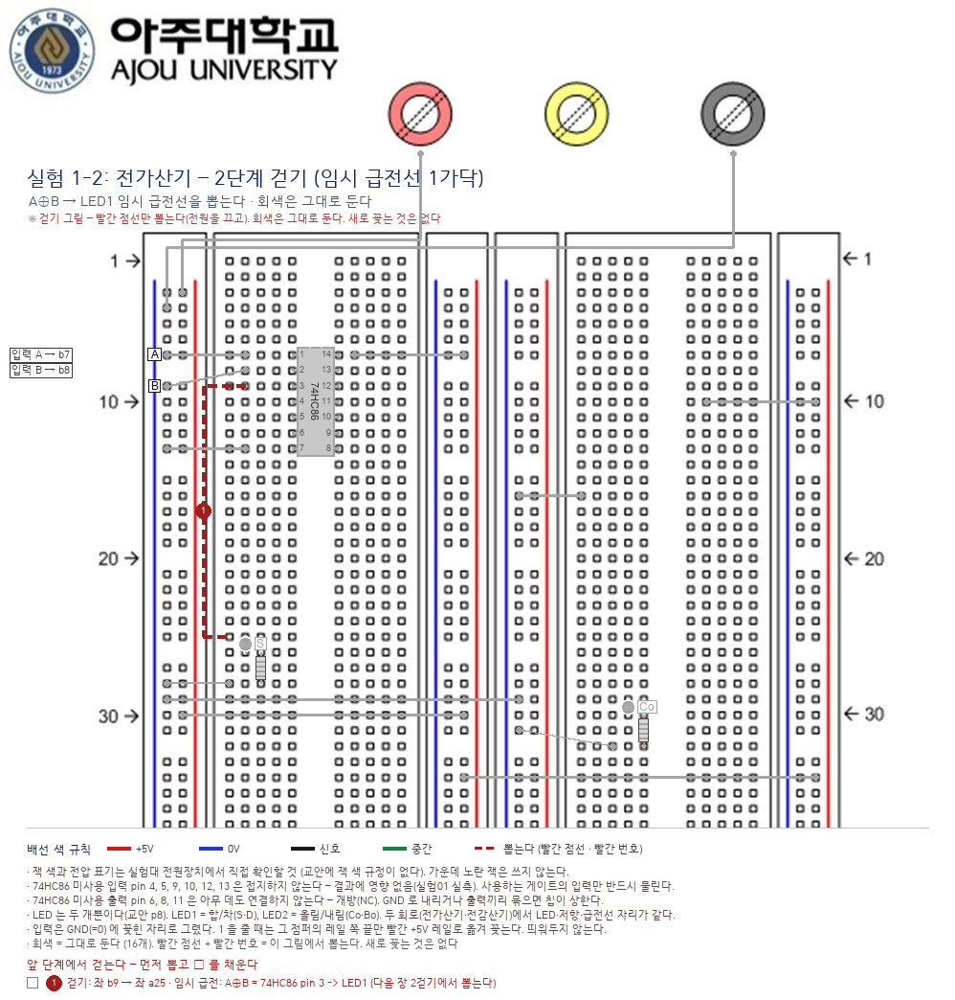
이 단계에서: 전원을 끄고 걷기 ①(임시 급전 U1 pin 3→LED1, 좌 b9→좌 a25)을 뽑는다. 그림의 빨간 점선이 그 한 가닥이다. 회색 선은 손대지 않는다. 새로 꽂는 것은 없다
먼저 뽑아요
- 1좌 b9 → 좌 a25 · 임시 급전: A⊕B = 74HC86 pin 3 -> LED1 (다음 장 2걷기에서 뽑는다)
회색 = 앞 단계에서 그대로 둔 것 16개
확인: 뽑은 한 가닥이 손에 있고 좌 b9·좌 a25 홀이 비어 있다 (LED 검사 없음)
단계 2
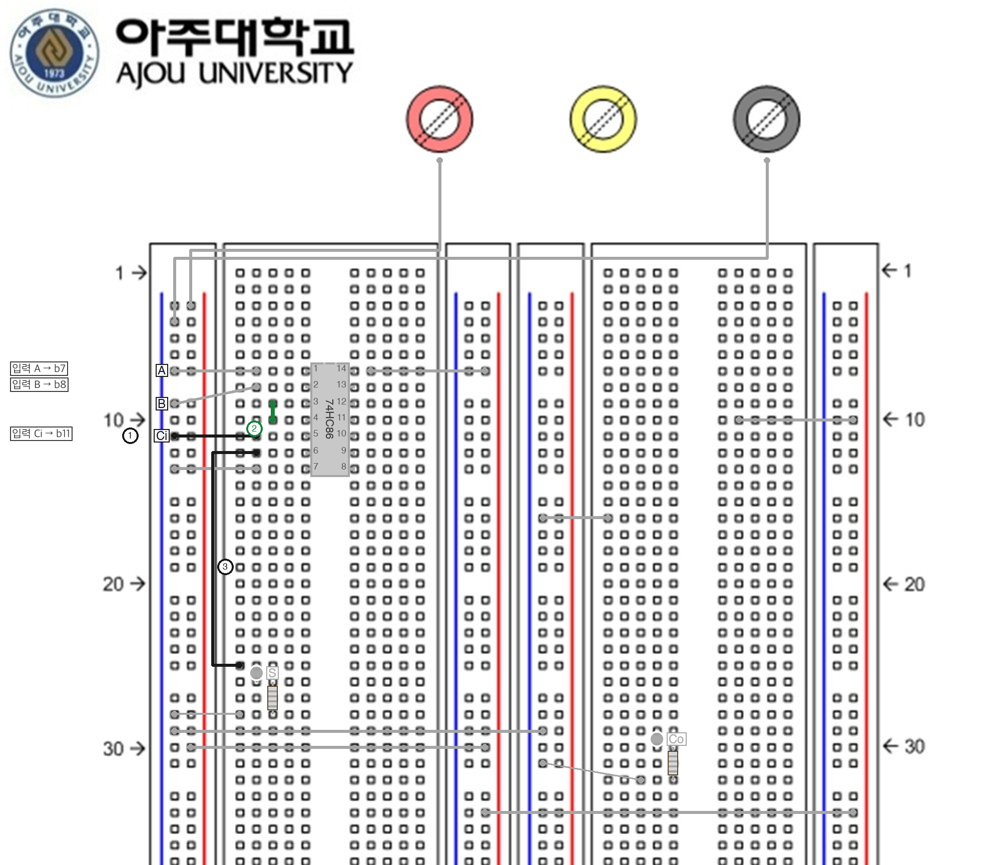
이 단계에서: 신호선: Ci→pin 5, U1 pin 3→U1 pin 4, pin 6→LED1 급전
- 1좌 GND레일11행 → 좌 b11입력 Ci -> 74HC86 pin 5 (XOR2) · 1 이면 레일 쪽 끝을 +5V 레일로 옮겨요
- 2좌 c9 → 좌 c10XOR1 출력 A⊕B -> XOR2 입력 (pin 3 -> pin 4)
- 3좌 b12 → 좌 a25S = 74HC86 pin 6 -> LED1
회색 = 앞 단계에서 그대로 둔 것 16개
확인 노드: S (U1 pin 6)
확인: 노드 S — LED1 = A⊕B⊕Ci, T3 8행의 S 열 (입력에 1 이 홀수 개일 때만 켜짐)
| 입력 — 점퍼 1=+5V · 0=GND | LED1 = S 예상 · U1 pin 6 | 확인 | ||
|---|---|---|---|---|
| A | B | Ci | ||
| 0 | 0 | 0 | 0 | |
| 0 | 0 | 1 | 1 | |
| 0 | 1 | 0 | 1 | |
| 0 | 1 | 1 | 0 | |
| 1 | 0 | 0 | 1 | |
| 1 | 0 | 1 | 0 | |
| 1 | 1 | 0 | 0 | |
| 1 | 1 | 1 | 1 | |
단계 3
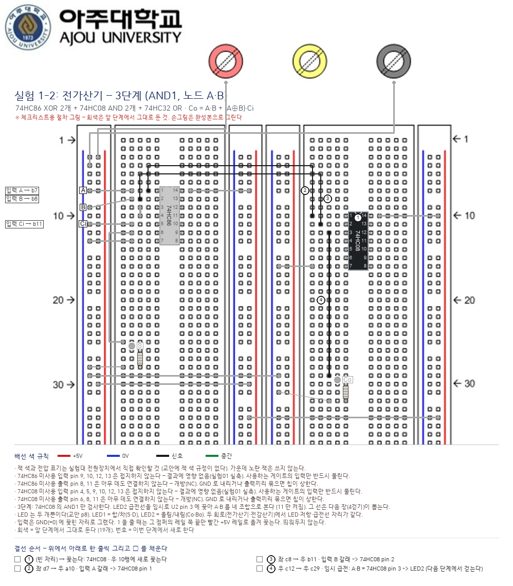
이 단계에서: 74HC08 을 S3 에 꽂는다. 신호선: A 갈래→U2 pin 1, B 갈래→U2 pin 2 (둘 다 칩 위 4·5행을 건넌다), 임시로 U2 pin 3→LED2 급전
- 1(빈 자리) → 꽂는다: 74HC08우 10행에 새로 꽂는다
- 2좌 d7 → 우 a10입력 A 갈래 -> 74HC08 pin 1
- 3좌 c8 → 우 b11입력 B 갈래 -> 74HC08 pin 2
- 4우 c12 → 우 c29임시 급전: A·B = 74HC08 pin 3 -> LED2 (다음 장 걷기에서 뽑는다)
회색 = 앞 단계에서 그대로 둔 것 19개
확인 노드: A·B (U2 pin 3)
확인: 노드 A·B — LED2 를 A·B 네 조합으로 본다 (11 만 켜짐). 74HC08 첫 사용
| 입력 — 점퍼 1=+5V · 0=GND | LED2 = A·B 예상 · U2 pin 3 | 확인 | |
|---|---|---|---|
| A | B | ||
| 0 | 0 | 0 | |
| 0 | 1 | 0 | |
| 1 | 0 | 0 | |
| 1 | 1 | 1 | |
4단계 전 · 걷기
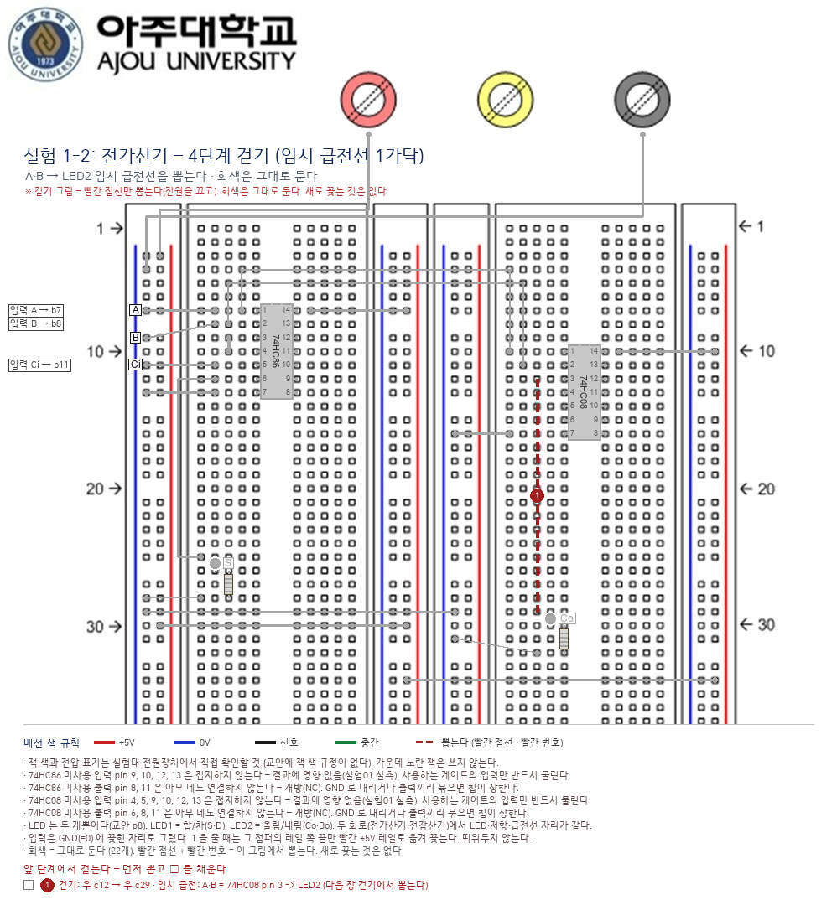
이 단계에서: 전원을 끄고 걷기 ①(임시 급전 U2 pin 3→LED2, 우 c12→우 c29)을 뽑는다. 그림의 빨간 점선이 그 한 가닥이다. 회색 선은 손대지 않는다. 새로 꽂는 것은 없다
먼저 뽑아요
- 1우 c12 → 우 c29 · 임시 급전: A·B = 74HC08 pin 3 -> LED2 (다음 장 걷기에서 뽑는다)
회색 = 앞 단계에서 그대로 둔 것 22개
확인: 뽑은 한 가닥이 손에 있고 우 c12·우 c29 홀이 비어 있다 (LED 검사 없음)
단계 4
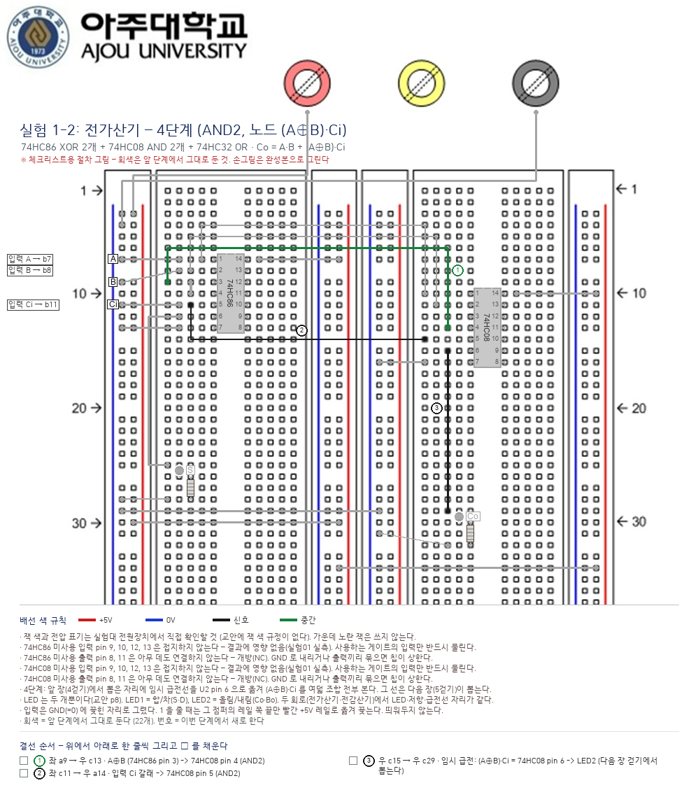
이 단계에서: 신호선: U1 pin 3→U2 pin 4, Ci 갈래→U2 pin 5, 임시로 U2 pin 6→LED2 급전
- 1좌 a9 → 우 c13A⊕B (74HC86 pin 3) -> 74HC08 pin 4 (AND2)
- 2좌 c11 → 우 a14입력 Ci 갈래 -> 74HC08 pin 5 (AND2)
- 3우 c15 → 우 c29임시 급전: (A⊕B)·Ci = 74HC08 pin 6 -> LED2 (다음 장 걷기에서 뽑는다)
회색 = 앞 단계에서 그대로 둔 것 22개
확인 노드: (A⊕B)·Ci (U2 pin 6)
확인: 노드 (A⊕B)·Ci — LED2 를 T3 8행으로 본다 (A⊕B 와 Ci 가 둘 다 1 인 행만 켜짐)
| 입력 — 점퍼 1=+5V · 0=GND | LED2 = (A⊕B)·Ci 예상 · U2 pin 6 | 확인 | ||
|---|---|---|---|---|
| A | B | Ci | ||
| 0 | 0 | 0 | 0 | |
| 0 | 0 | 1 | 0 | |
| 0 | 1 | 0 | 0 | |
| 0 | 1 | 1 | 1 | |
| 1 | 0 | 0 | 0 | |
| 1 | 0 | 1 | 1 | |
| 1 | 1 | 0 | 0 | |
| 1 | 1 | 1 | 0 | |
5단계 전 · 걷기
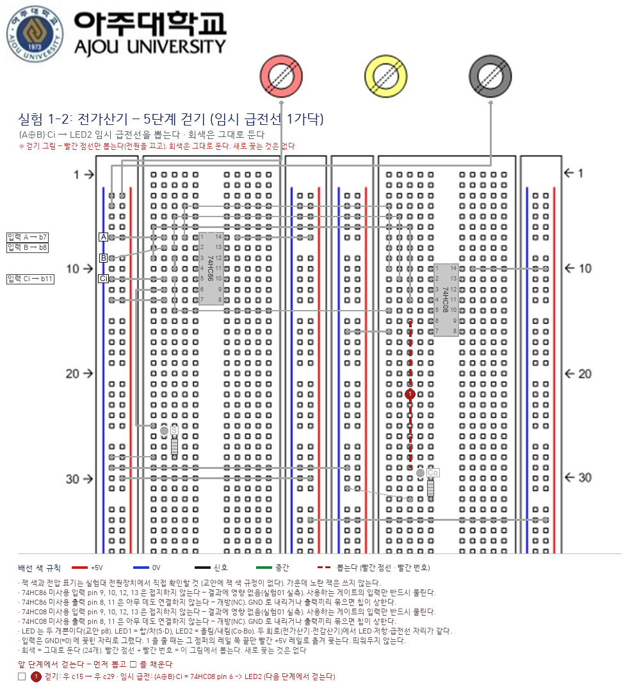
이 단계에서: 전원을 끄고 걷기 ①(임시 급전 U2 pin 6→LED2, 우 c15→우 c29)을 뽑는다. 그림의 빨간 점선이 그 한 가닥이다. 회색 선은 손대지 않는다. 새로 꽂는 것은 없다
먼저 뽑아요
- 1우 c15 → 우 c29 · 임시 급전: (A⊕B)·Ci = 74HC08 pin 6 -> LED2 (다음 장 걷기에서 뽑는다)
회색 = 앞 단계에서 그대로 둔 것 24개
확인: 뽑은 한 가닥이 손에 있고 우 c15·우 c29 홀이 비어 있다 (LED 검사 없음)
단계 5

이 단계에서: 74HC32 를 S4 에 꽂고 전원 두 가닥을 잇는다. 신호선: U2 pin 3→U3 pin 2, U2 pin 6→U3 pin 1, U3 pin 3→LED2 급전
- 1(빈 자리) → 꽂는다: 74HC32우 21행에 새로 꽂는다
- 2우 d12 → 우 d22AND1 출력 (74HC08 pin 3) -> 74HC32 pin 2
- 3우 b15 → 우 b21AND2 출력 (74HC08 pin 6) -> 74HC32 pin 1
- 4우 c23 → 우 c29Co = 74HC32 pin 3 -> LED2
- 5우 g21 → 우 VCC레일21행pin 14 -> +5V 레일
- 6우 d27 → 우 중앙GND레일27행pin 7 -> GND 레일
회색 = 앞 단계에서 그대로 둔 것 24개
확인 노드: Co (U3 pin 3)
확인: 노드 Co — T3 8행 전부 (74HC32 첫 사용). LED1 = S 와 LED2 = Co 가 동시에 맞아야 한다
T3 · 전가산기 진리표
출처: derived (S = A⊕B⊕Ci ; Co = A·B + (A⊕B)·Ci)
| A | B | Ci | S예상 | Co예상 | 확인 | 사진 파일명 |
|---|---|---|---|---|---|---|
| 0 | 0 | 0 | 0 | 0 | 1-2 000.jpg | |
| 0 | 0 | 1 | 1 | 0 | 1-2 001.jpg | |
| 0 | 1 | 0 | 1 | 0 | 1-2 010.jpg | |
| 0 | 1 | 1 | 0 | 1 | 1-2 011.jpg | |
| 1 | 0 | 0 | 1 | 0 | 1-2 100.jpg | |
| 1 | 0 | 1 | 0 | 1 | 1-2 101.jpg | |
| 1 | 1 | 0 | 0 | 1 | 1-2 110.jpg | |
| 1 | 1 | 1 | 1 | 1 | 1-2 111.jpg |
사진: 시험한 행마다 1장씩 찍어요(불일치 행은 꼭). 파일명은 표의 '사진 파일명' 열 그대로예요 — 앞에 실험 번호(예: 실험03)는 붙이지 않아요
T3 · 불일치 기록
| 불일치 행 | 예상 | 실제 | 사진 파일 | 짐작된 원인 |
|---|---|---|---|---|
T4 · 전가산기 Truth Table — 참조
출처: manual:p5
| A | B | Ci | S | Co |
|---|---|---|---|---|
| 0 | 0 | 0 | 0 | 0 |
| 0 | 0 | 1 | 1 | 0 |
| 0 | 1 | 0 | 1 | 0 |
| 0 | 1 | 1 | 0 | 1 |
| 1 | 0 | 0 | 1 | 0 |
| 1 | 0 | 1 | 0 | 1 |
| 1 | 1 | 0 | 0 | 1 |
| 1 | 1 | 1 | 1 | 1 |
회로 2/2 · C4 · 실험 2-2) 전감산기 (74HC86 + 74HC04 + 74HC08 + 74HC32) · 기록: T7 · 판독: LED

강의노트 p7 · 회로 구성
교안 p7 회로도 그대로. C2(전가산기)를 다 만든 상태에서 바꾼다 — 교안이 앞에 두는 반감산기(실험 2-1)는 조교 공지 _350547_1 로 하지 않는다. 전가산기와 전감산기는 XOR 쪽이 같고 AND 입력 둘만 다르다: AND1 pin 1 이 A 대신 A' 를, AND2 pin 4 가 A⊕B 대신 (A⊕B)' 를 받는다. 그래서 새 칩은 74HC04 하나다. 1걷기 보드에서 세 가닥을 걷는다 — AND1 로 가던 A 갈래, AND2 로 가던 A⊕B, 그리고 LED2 의 최종 급전선이다. 마지막 것은 1단계에서 프로브가 된다: Bo 는 아직 뜻이 없고(AND2 입력이 비었다) LED2 가 비므로, 급전선을 A'·B 핀에 잠시 꽂아 인버터가 들어온 것을 그 자리에서 본다. 2026-09-18 실험실에서는 이 중 두 가닥을 안 걷은 채 인버터 쪽을 꽂아 LED 가 어긋났고, 그 뒤로 걷기를 그림 한 장으로 뗐다. Ci 점퍼는 그 자리 그대로 Bi 가 되고, LED1 급전(U1 pin 6)·LED2 급전(U3 pin 3)도 그대로다 — A⊕B⊕Ci 와 A⊕B⊕Bi 는 같은 함수라 LED1 은 배선을 안 바꾸고 S 에서 D 가 된다.
완성본 — 손그림 원도 (회색 없음)
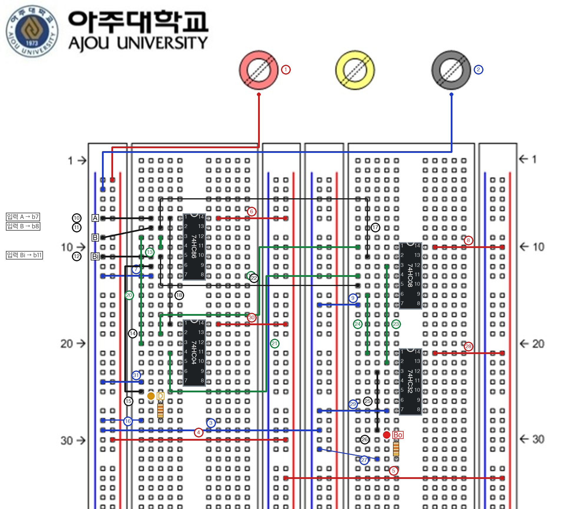
결선도: 실험03_2-2_결선도_전감산기.png
- 1전원잭 → 좌 VCC레일3행전원장치 +5V 잭
- 2전원잭 → 좌 GND레일4행전원장치 0V 잭
- 3좌 GND레일29행 → 우 중앙GND레일29행레일 브리지
- 4좌 VCC레일30행 → 좌 중앙VCC레일30행레일 브리지
- 5좌 중앙VCC레일34행 → 우 VCC레일34행레일 브리지
- 6좌 g7 → 좌 중앙VCC레일7행pin 14 -> +5V 레일
- 7좌 b13 → 좌 GND레일13행pin 7 -> GND 레일
- 8우 g10 → 우 VCC레일10행pin 14 -> +5V 레일
- 9우 a16 → 우 중앙GND레일16행pin 7 -> GND 레일
- 10좌 GND레일7행 → 좌 b7입력 A -> 74HC86 pin 1 · 1 이면 레일 쪽 끝을 +5V 레일로 옮겨요
- 11좌 GND레일9행 → 좌 b8입력 B -> 74HC86 pin 2 · 1 이면 레일 쪽 끝을 +5V 레일로 옮겨요
- 12좌 GND레일11행 → 좌 b11입력 Bi -> 74HC86 pin 5 (XOR2) · 1 이면 레일 쪽 끝을 +5V 레일로 옮겨요
- 13좌 c9 → 좌 c10XOR1 출력 A⊕B -> XOR2 입력 (pin 3 -> pin 4)
- 14좌 b12 → 좌 a25D = 74HC86 pin 6 -> LED1
- 15좌 b25 → 좌 c28D: LED(좌 b25→좌 b26) + 330Ω(좌 c26→좌 c28) 직렬 · D = A⊕B⊕Bi — 진리표 T7 의 D 열
- 16좌 a28 → 좌 GND레일28행D 저항 아래 -> GND
- 17좌 c8 → 우 b11입력 B 갈래 -> 74HC08 pin 2
- 18좌 d7 → 좌 d18입력 A 갈래 -> 74HC04 pin 1
- 19좌 c19 → 우 a10A' (74HC04 pin 2) -> 74HC08 pin 1
- 20좌 a9 → 좌 a20A⊕B (74HC86 pin 3) -> 74HC04 pin 3 (NOT2)
- 21좌 d21 → 우 a13(A⊕B)' (74HC04 pin 4) -> 74HC08 pin 4 (AND2)
- 22좌 c11 → 우 a14입력 Bi 갈래 -> 74HC08 pin 5 (AND2)
- 23우 d12 → 우 d22AND1 출력 (74HC08 pin 3) -> 74HC32 pin 2
- 24우 b15 → 우 b21AND2 출력 (74HC08 pin 6) -> 74HC32 pin 1
- 25우 c23 → 우 c29Bo = 74HC32 pin 3 -> LED2
- 26우 d29 → 우 e32Bo: LED(우 d29→우 d30) + 330Ω(우 e30→우 e32) 직렬 · Bo = A'·B + (A⊕B)'·Bi — 진리표 T7 의 Bo 열
- 27우 c32 → 우 중앙GND레일31행Bo 저항 아래 -> GND
- 28우 g21 → 우 VCC레일21행pin 14 -> +5V 레일
- 29우 d27 → 우 중앙GND레일27행pin 7 -> GND 레일
- 30좌 g18 → 좌 중앙VCC레일18행pin 14 -> +5V 레일
- 31좌 a24 → 좌 GND레일24행pin 7 -> GND 레일
손그림은 이 그림을 따라 그리고, 학번·이름·날짜는 손으로 적어요
U1 = 74HC86 (quad 2-input XOR, DIP-14) — S1, C2 와 같은 칩
- pin 14 → VCC(+5V)
- pin 7 → GND
- pin 1 ← 입력 A (XOR1)
- pin 2 ← 입력 B
- pin 3 → U1.pin4 (XOR1 출력 A⊕B → XOR2 입력)
- pin 3 → U4.pin3 (A⊕B → NOT2 입력, 팬아웃)
- pin 4 ← U1.pin3 (XOR2)
- pin 5 ← 입력 Bi
- pin 6 → LED1 애노드 (330Ω 직렬) → GND ※ D = A⊕B⊕Bi, T7 의 D 열
U4 = 74HC04 (hex inverter, DIP-14) — S2
- pin 14 → VCC(+5V)
- pin 7 → GND
- pin 1 ← 입력 A (NOT1)
- pin 2 → U2.pin1 (A')
- pin 3 ← U1.pin3 (NOT2, A⊕B)
- pin 4 → U2.pin4 ((A⊕B)')
U2 = 74HC08 (quad 2-input AND, DIP-14) — S3, C2 와 같은 칩
- pin 14 → VCC(+5V)
- pin 7 → GND
- pin 1 ← U4.pin2 (AND1, A')
- pin 2 ← 입력 B
- pin 3 → U3.pin2 (AND1 출력 A'·B → OR)
- pin 4 ← U4.pin4 (AND2, (A⊕B)')
- pin 5 ← 입력 Bi
- pin 6 → U3.pin1 (AND2 출력 (A⊕B)'·Bi → OR)
U3 = 74HC32 (quad 2-input OR, DIP-14) — S4, C2 와 같은 칩
- pin 14 → VCC(+5V)
- pin 7 → GND
- pin 1 ← U2.pin6 ((A⊕B)'·Bi)
- pin 2 ← U2.pin3 (A'·B)
- pin 3 → LED2 애노드 (330Ω 직렬) → GND ※ Bo = A'·B + (A⊕B)'·Bi, T7 의 Bo 열
- 미사용 입력핀: pin 9, 10, 12, 13 → 개방 (접지 생략 — 공통 규칙)
- 미사용 출력핀: pin 8, 11 → 개방
- 미사용 입력핀: pin 5, 9, 11, 13 → 개방 (접지 생략 — 공통 규칙)
- 미사용 출력핀: pin 6, 8, 10, 12 → 개방
- 미사용 입력핀: pin 9, 10, 12, 13 → 개방 (접지 생략 — 공통 규칙)
- 미사용 출력핀: pin 8, 11 → 개방
- 미사용 입력핀: pin 4, 5, 9, 10, 12, 13 → 개방 (접지 생략 — 공통 규칙)
- 미사용 출력핀: pin 6, 8, 11 → 개방
A 는 U1 pin 1·U4 pin 1 로, Bi 는 U1 pin 5·U2 pin 5 로, A⊕B(U1 pin 3) 는 U1 pin 4·U4 pin 3 으로 팬아웃한다. OR 의 pin 1·2 배정은 C2 와 같은 이유로 배선 편의다.
1단계 전 · 걷기
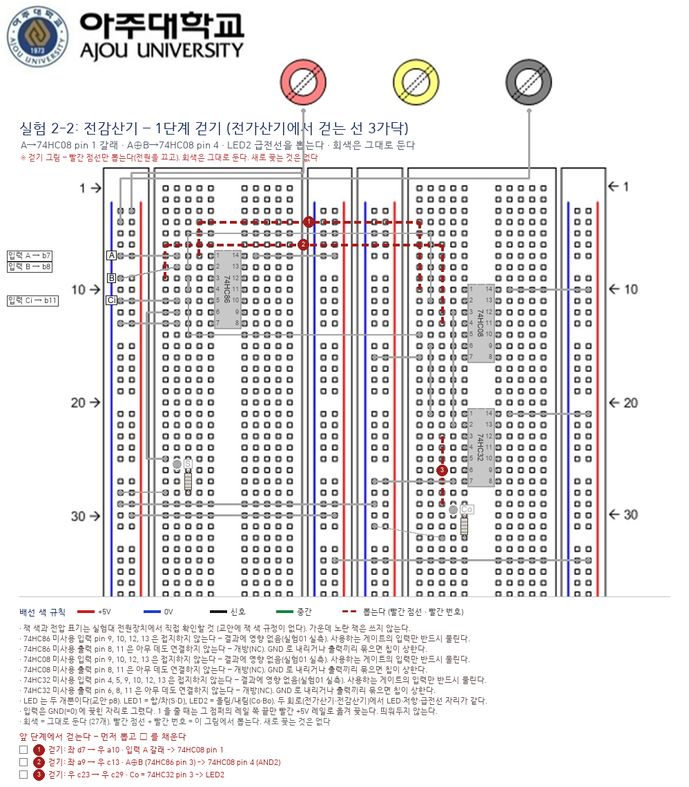
이 단계에서: 전원을 끄고 걷기 ①(A→U2 pin 1 갈래, 좌 d7→우 a10)·②(U1 pin 3→U2 pin 4, 좌 a9→우 c13)·③(U3 pin 3→LED2 급전, 우 c23→우 c29)를 뽑는다. 그림의 빨간 점선이 그 세 가닥이다. 회색 선은 손대지 않는다. 새로 꽂는 것은 없다
먼저 뽑아요
- 1좌 d7 → 우 a10 · 입력 A 갈래 -> 74HC08 pin 1
- 2좌 a9 → 우 c13 · A⊕B (74HC86 pin 3) -> 74HC08 pin 4 (AND2)
- 3우 c23 → 우 c29 · Co = 74HC32 pin 3 -> LED2
회색 = 앞 단계에서 그대로 둔 것 27개
확인: 뽑은 세 가닥이 손에 있고 좌 d7·우 a10·좌 a9·우 c13·우 c23·우 c29 홀이 비어 있다 (LED 검사 없음 — 2026-09-18 에는 이 중 두 가닥을 안 뽑은 채 인버터를 꽂았다)
단계 1
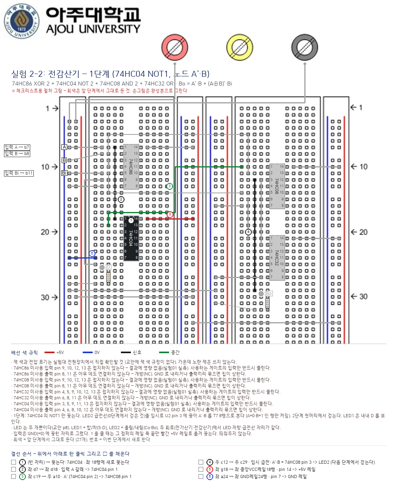
이 단계에서: 74HC04 를 S2 에 꽂고 전원 두 가닥(14→VCC, 7→GND)을 잇는다. 신호선: A→U4 pin 1, U4 pin 2→U2 pin 1(좌 j 열과 중앙 레일 사이 여백으로 건넌다), 임시로 U2 pin 3→LED2 급전. Ci 점퍼는 그대로 두고 이제 Bi 로 부른다
- 1(빈 자리) → 꽂는다: 74HC04좌 18행에 새로 꽂는다
- 2좌 d7 → 좌 d18입력 A 갈래 -> 74HC04 pin 1
- 3좌 c19 → 우 a10A' (74HC04 pin 2) -> 74HC08 pin 1
- 4우 c12 → 우 c29임시 급전: A'·B = 74HC08 pin 3 -> LED2 (다음 장 걷기에서 뽑는다)
- 5좌 g18 → 좌 중앙VCC레일18행pin 14 -> +5V 레일
- 6좌 a24 → 좌 GND레일24행pin 7 -> GND 레일
회색 = 앞 단계에서 그대로 둔 것 27개
확인 노드: A'·B (U2 pin 3)
확인: 노드 A'·B — LED2 를 T7 8행으로 본다 (A=0 이고 B=1 인 행에서만 켜짐). LED1 은 내내 D 를 보인다. 74HC04 첫 사용
| 입력 — 점퍼 1=+5V · 0=GND | LED2 = A'·B 예상 · U2 pin 3 | 확인 | |
|---|---|---|---|
| A | B | ||
| 0 | 0 | 0 | |
| 0 | 1 | 1 | |
| 1 | 0 | 0 | |
| 1 | 1 | 0 | |
2단계 전 · 걷기
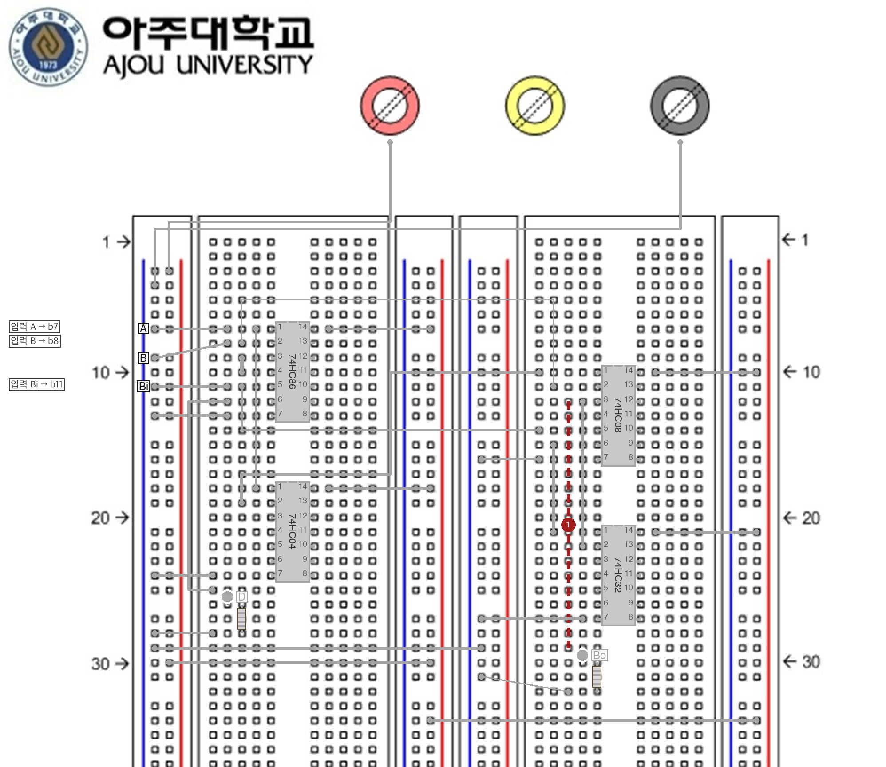
이 단계에서: 전원을 끄고 걷기 ①(임시 급전 U2 pin 3→LED2, 우 c12→우 c29)을 뽑는다. 그림의 빨간 점선이 그 한 가닥이다. 회색 선은 손대지 않는다. 새로 꽂는 것은 없다
먼저 뽑아요
- 1우 c12 → 우 c29 · 임시 급전: A'·B = 74HC08 pin 3 -> LED2 (다음 장 걷기에서 뽑는다)
회색 = 앞 단계에서 그대로 둔 것 32개
확인: 뽑은 한 가닥이 손에 있고 우 c12·우 c29 홀이 비어 있다 (LED 검사 없음)
단계 2
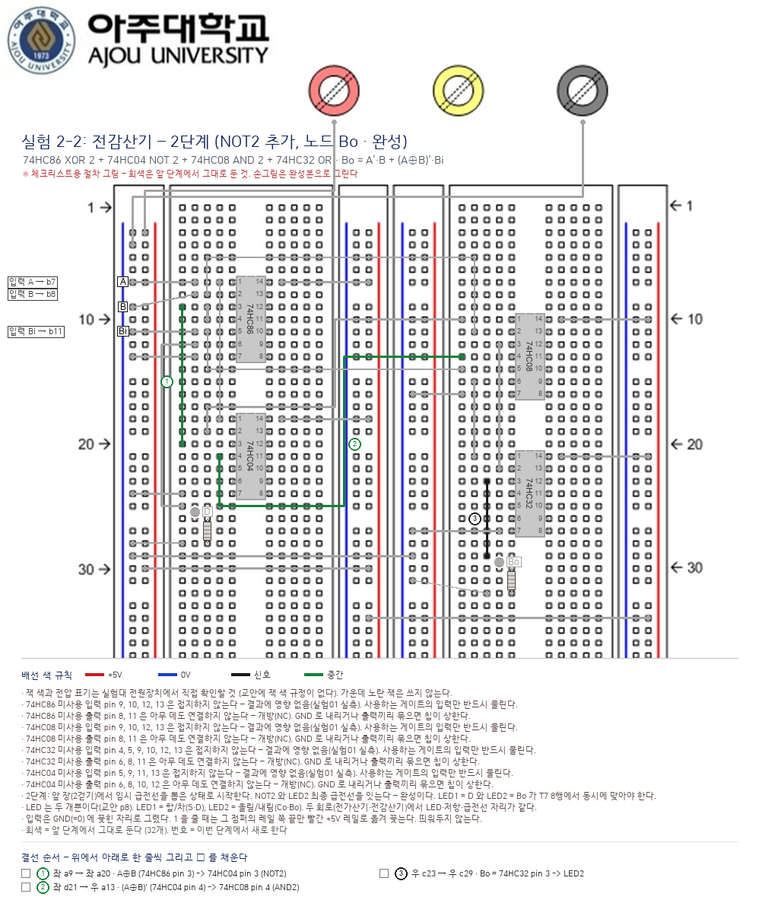
이 단계에서: 신호선: U1 pin 3→U4 pin 3, U4 pin 4→U2 pin 4(여백 차선으로 건넌다), U3 pin 3→LED2 급전
- 1좌 a9 → 좌 a20A⊕B (74HC86 pin 3) -> 74HC04 pin 3 (NOT2)
- 2좌 d21 → 우 a13(A⊕B)' (74HC04 pin 4) -> 74HC08 pin 4 (AND2)
- 3우 c23 → 우 c29Bo = 74HC32 pin 3 -> LED2
회색 = 앞 단계에서 그대로 둔 것 32개
확인 노드: Bo (U3 pin 3)
확인: 노드 Bo — T7 8행 전부. LED1 = D 는 1 이 홀수 개일 때, LED2 = Bo 는 001·010·011·111 에서 켜짐
T7 · 전감산기 진리표
출처: derived (D = A⊕B⊕Bi ; Bo = A'·B + (A⊕B)'·Bi)
| A | B | Bi | D예상 | Bo예상 | 확인 | 사진 파일명 |
|---|---|---|---|---|---|---|
| 0 | 0 | 0 | 0 | 0 | 2-2 000.jpg | |
| 0 | 0 | 1 | 1 | 1 | 2-2 001.jpg | |
| 0 | 1 | 0 | 1 | 1 | 2-2 010.jpg | |
| 0 | 1 | 1 | 0 | 1 | 2-2 011.jpg | |
| 1 | 0 | 0 | 1 | 0 | 2-2 100.jpg | |
| 1 | 0 | 1 | 0 | 0 | 2-2 101.jpg | |
| 1 | 1 | 0 | 0 | 0 | 2-2 110.jpg | |
| 1 | 1 | 1 | 1 | 1 | 2-2 111.jpg |
사진: 시험한 행마다 1장씩 찍어요(불일치 행은 꼭). 파일명은 표의 '사진 파일명' 열 그대로예요 — 앞에 실험 번호(예: 실험03)는 붙이지 않아요
T7 · 불일치 기록
| 불일치 행 | 예상 | 실제 | 사진 파일 | 짐작된 원인 |
|---|---|---|---|---|
T8 · 전감산기 Truth Table — 참조
출처: manual:p7
| A | B | Bi | D | Bo |
|---|---|---|---|---|
| 0 | 0 | 0 | 0 | 0 |
| 0 | 0 | 1 | 1 | 1 |
| 0 | 1 | 0 | 1 | 1 |
| 0 | 1 | 1 | 0 | 1 |
| 1 | 0 | 0 | 1 | 0 |
| 1 | 0 | 1 | 0 | 0 |
| 1 | 1 | 0 | 0 | 0 |
| 1 | 1 | 1 | 1 | 1 |
단계에서 안 본 노드 — 프로브로 찍을 핀
틀린 행이 나오면 입력 쪽 노드부터 프로브로 찍어 봐요. 기대값과 처음 갈라지는 노드가 고장 자리예요 — 그 게이트의 입력 핀이 틀리면 선, 맞으면 게이트 문제예요
| A | B | Bi | A' U4 pin 2 |
A⊕B U1 pin 3 |
(A⊕B)' U4 pin 4 |
D U1 pin 6 |
(A⊕B)'·Bi U2 pin 6 |
|---|---|---|---|---|---|---|---|
| 0 | 0 | 0 | 1 | 0 | 1 | 0 | 0 |
| 0 | 0 | 1 | 1 | 0 | 1 | 1 | 1 |
| 0 | 1 | 0 | 1 | 1 | 0 | 1 | 0 |
| 0 | 1 | 1 | 1 | 1 | 0 | 0 | 0 |
| 1 | 0 | 0 | 0 | 1 | 0 | 1 | 0 |
| 1 | 0 | 1 | 0 | 1 | 0 | 0 | 0 |
| 1 | 1 | 0 | 0 | 0 | 1 | 0 | 0 |
| 1 | 1 | 1 | 0 | 0 | 1 | 1 | 1 |